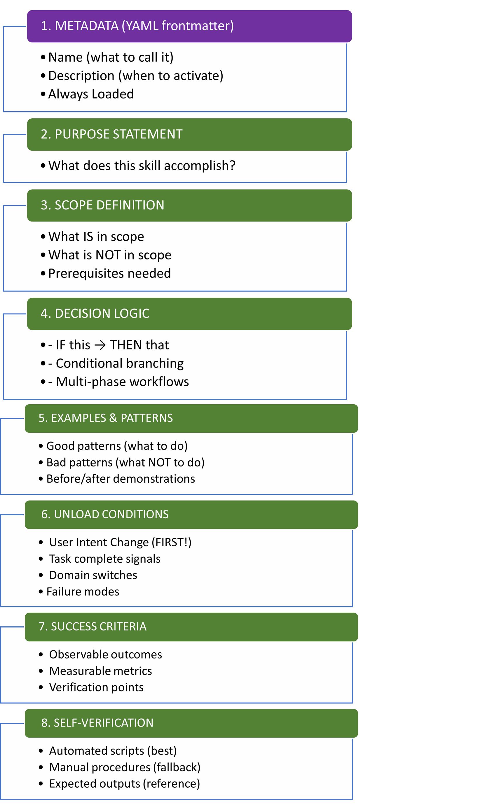
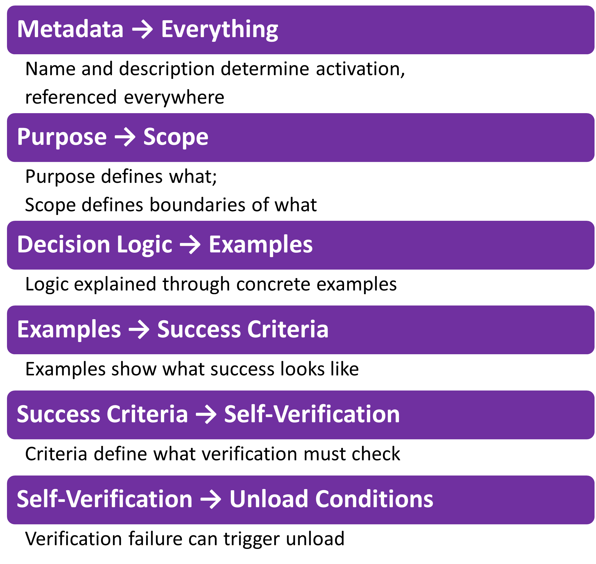
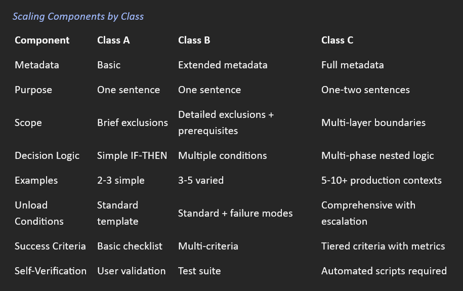

Section 1.5: Required Components Deep Dive¶
**For:** Intermediate to advanced users
**Prerequisites:** Sections 1.1-1.4 (foundation, templates, advanced patterns, semantic tags)
**What you'll learn:** How each of the 8 core components works and how they compose into complete skills.
Introduction¶
You've learned the foundation (Section 1.1), built basic skills (Section 1.2), explored advanced patterns (Section 1.3), and mastered semantic tags (Section 1.4). Now we dive deep into the 8 core components that make up every effective skill, examining each one individually before showing how they compose into cohesive, production-ready skills.
The 8 Components-¶
- Skill Metadata (YAML frontmatter)
- Purpose Statement
- Scope Definition (Critical boundaries)
- Decision Logic
- Examples and Patterns
- Unload Conditions
- Success Criteria
- Self-Verification
Component 1: Skill Metadata (YAML Frontmatter)**¶
What It Is Every skill begins with YAML frontmatter that provides essential metadata for skill discovery and activation.
Minimum required fields:
All available fields:
name: skill-name-here
description: What the skill does and when to use it
license: MIT
compatibility: Ex.-PostgreSQL 12+, MySQL 8+
metadata:
author: Ex.- your-organization
version: Ex.- "2.1.0"
last_updated: Ex.- "2026-01-29"
category: Ex.- database-optimization
allowed-tools: Ex.- bash,filesystem,web_search
The Name Field¶
Purpose: Identifies the skill for activation and reference
Constraints:
• Max 64 characters
• Lowercase letters, numbers, hyphens only
• Must NOT start or end with hyphens
• Must match parent directory name
• Recommended: gerund form (verb + -ing)
Why gerund form works best¶
Gerunds describe ongoing action, matching how users naturally describe tasks:
Good (gerund form)
name: optimizing-sql-queries
name: analyzing-marketing-campaigns
name: formatting-technical-documents
name: sql-query-optimizer
name: marketing-campaign-analyzer
name: technical-document-formatter
User says: "I'm optimizing queries" → Matches "optimizing-sql-queries" naturally
The Description Field¶
Purpose: Helps models decide when to activate the skill
Constraints:
• Max 1,024 characters
• Must be non-empty
• Should describe WHAT the skill does AND WHEN to use it
• Include specific keywords users might mention
Anatomy of a good description:
description: >
[WHAT] Optimize slow SQL queries for PostgreSQL and MySQL
[WHEN] using systematic analysis and automated verification.
[TRIGGERS] Use when query execution time exceeds acceptable
thresholds or EXPLAIN ANALYZE output is provided.
[KEYWORDS] Keywords: slow query, performance, database,
optimization, EXPLAIN, index.
Components¶
1. WHAT: Core capability in one sentence
2. WHEN: Trigger conditions
3. KEYWORDS: Terms users might mention
Simple vs. Complex Descriptions¶
Simple (Class A)¶
name: enforcing-oxford-comma
description: >
Apply Oxford comma (serial comma) to lists with 3+ items in
written content. Use when editing or reviewing text that
contains lists. Keywords: comma, list, grammar, style.
Complex (Class C)¶
name: optimizing-sql-queries
description: >
Optimize slow SQL queries for PostgreSQL and MySQL using
systematic analysis, targeted improvements, and automated
verification. Use when query execution time exceeds acceptable
thresholds (>1s user-facing, >10s batch), EXPLAIN ANALYZE
output is provided, or performance degradation is observed.
Includes automated testing, regression checking, and production
deployment guidance. Keywords: slow query, performance,
database, optimization, EXPLAIN, index, bottleneck.
Optional Metadata Fields¶
**license**
license: MIT
Or reference to license file:
license: See LICENSE.md
**compatibility**
compatibility: PostgreSQL 12+, MySQL 8+, requires EXPLAIN ANALYZE support
**metadata (arbitrary key-value pairs)**
metadata:
author: engineering-team
version: "2.1.0"
last_updated: "2026-01-29"
category: database-optimization
maintainer: [Name or email of maintainer]
deprecated: false
replaces: old-query-optimization
**allowed-tools (experimental)**
allowed-tools: bash,filesystem,web_search
Pre-approved tools the skill can use without asking permission each time.
Note: This is experimental and may not be supported by all platforms.
Common Mistakes¶
Mistake 1: Vague Description¶
Wrong: description: Helps with database stuff
Correct description: >Optimize slow SQL queries for PostgreSQL and MySQL. Use whenquery execution time >1 second or EXPLAIN output shows inefficiencies. Keywords: slow query, performance, database.
Mistake 2: Missing Keywords¶
Wrong: description: Systematic query optimization with verification.
Correct: description: Systematic query optimization with verification. Keywords: slow query, performance, database, EXPLAIN, index, bottleneck. Why: Users might say "this query is slow" not "I need query optimization"—keywords help activation.
Mistake 3: Non-gerund Name¶
Wrong: name: sql-optimizer
Correct: name: optimizing-sql-queries Why: Matches natural language ("I'm optimizing queries") for better activation.
Component 2: Purpose Statement¶
What It Is A clear, concise statement of what the skill does, typically placed immediately after the YAML frontmatter.
Pattern:
[Skill Name] Purpose: [One sentence describing what this skill accomplishes]
Simple vs. Complex Purpose Statements¶
Class A (Simple)¶
# [Skill Name-Enforcing Oxford Comma]
**Purpose:** Apply Oxford comma (serial comma) to lists
with three or more items in written content.
**Characteristics:**
• Single, clear objective
• No multi-step workflow
• Straightforward application
Class B (Intermediate)¶
#[Skill name- Analyzing Marketing Campaigns]
**Purpose:** Analyze marketing campaign performance data using standardized metrics,
identify optimization opportunities, and generate actionable recommendations with budget reallocation guidance.
Characteristics: • Multi-phase workflow • Decision points • Deliverable output
Class C (Advanced)¶
#[Skill name- Optimizing SQL Queries]
**Purpose:** Systematically optimize slow database queries through bottleneck analysis,
targeted improvements, automated verification, and regression testing to ensure production-ready performance gains.
Characteristics: • Complex multi-step process • Verification requirements • Quality gates • Production considerations
What Makes a Good Purpose Statement¶
-
Specific Action Vague: "Helps with writing" Specific: "Apply Oxford comma to lists with 3+ items"
-
Clear Scope Unbounded: "Optimize databases" Bounded: "Optimize slow SQL queries for PostgreSQL and MySQL"
-
Observable Outcome Abstract: "Improve query understanding" Observable: "Reduce query execution time by >50% through targeted index optimization"
-
One Sentence (Usually) Complex skills may need two sentences, but keep it concise: Purpose: Optimize slow SQL queries through systematic analysis and verification. Includes automated testing to ensure improvements don't cause regressions.
Purpose Statement + Semantic Tags¶
The purpose statement often appears with
Optimizing SQL Queries_ Example
**Purpose:** Systematically optimize slow database queries for PostgreSQL and MySQL.
<critical>
Do NOT use this skill for:
- Schema design or database architecture → Use schema-design skill
- SQL syntax errors or debugging → Use sql-debugging skill
- NoSQL databases (MongoDB, Redis, etc.) → Use database-specific skills
- Queries already executing in < 100ms → Optimization not needed
</critical>
This pattern immediately clarifies what IS and ISN'T in scope.
Component 3: Scope Definition (Critical Boundaries)¶
What It Is: Explicit boundaries that define when the skill SHOULD and SHOULD NOT be used. Implemented with two primary tags:
The Dual Boundary Pattern¶
Pattern 1: Critical Exclusions
<critical>
Do NOT use this skill for:
- [Wrong domain 1] → Use [alternative-skill]
- [Wrong domain 2] → Use [alternative-skill]
- [Wrong problem type] → [Explanation]
- [Wrong technology] → [Explanation]
</critical>
Pattern 2: Detailed Exclusions with Context
<exclusion>
Do NOT use this skill for:
**Wrong database engines:**
- NoSQL databases (MongoDB, Redis, Cassandra) → This skill is SQL-specific
- Graph databases (Neo4j, Neptune) → Use graph-query-optimization
- Time-series databases (InfluxDB, TimescaleDB) → Use time-series-optimization
**Wrong problem types:**
- Writing new queries from scratch → Use sql-best-practices skill
- Debugging syntax errors → Use sql-debugging skill
- Schema design or migrations → Use schema-design skill
**Wrong optimization context:**
- Queries already meeting SLA (< 100ms) → Don't optimize what isn't broken
- Queries run rarely (< 10 times/day) → Optimization effort not justified
- Application-level performance issues → Not database optimization
</exclusion>
Why Scope Definition Matters¶
Without Clear Boundaries:
User: "Help me design a database schema for user management"
Model (confused):
• Should I use optimizing-sql-queries skill? (It mentions databases...)
• Or schema-design skill? (This is about structure...)
• Or general knowledge? (Not sure if specialized skill applies...)
**Result:** Wrong skill activated or no skill activated
***With Clear Boundaries:**
<critical>
Do NOT use optimizing-sql-queries for:
- Schema design or database architecture → Use schema-design skill
</critical>
User: "Help me design a database schema for user management"
Model:
• optimizing-sql-queries explicitly excludes schema design
• Activates schema-design skill instead
• Correct skill for the task ✓
Scope Definition Across Complexity Levels¶
Class A (Simple)-Scope definition¶
<critical>
Do NOT use this skill for:
- Technical writing or documentation → Different style rules apply
- Code comments → Different formatting conventions
- Formal academic writing → May require different comma usage per style guide
</critical>
Class B (Intermediate) Scope definition¶
<critical>
Do NOT use this skill for:
- Schema design → Use schema-design skill
- Syntax debugging → Use sql-debugging skill
- NoSQL databases → This is SQL-specific
</critical>
<exclusion>
**Platform scope:**
- PostgreSQL 12+ (supported)
- MySQL 8+ (supported)
- SQL Server (not currently supported)
- Oracle (not currently supported)
**Query scope:**
- SELECT optimization (supported)
- INSERT/UPDATE/DELETE (limited - different tradeoffs)
- DDL statements (not applicable - schema changes)
</exclusion>
Class C (Advanced) Scope definition¶
<critical>
Do NOT use this skill for:
- Schema design or database architecture → Use schema-design skill
- SQL syntax errors or debugging → Use sql-debugging skill
- NoSQL databases (MongoDB, Redis, etc.) → Use database-specific skills
- Queries already executing in < 100ms → Optimization not needed
- Read-only analysis without optimization authority
</critical>
<warning>
This skill focuses on query-level optimization only.
System-level performance issues require different approaches:
- Database server configuration → Requires DBA, not query changes
- Hardware limitations (disk I/O, memory) → Infrastructure problem
- Network latency → Not database optimization
- Application connection pooling → Application-level concern
If query optimization doesn't improve performance sufficiently,
escalate to DBA for system-level analysis.
</warning>
<exclusion>
Detailed exclusions with platform specifics...
[Full exclusion section as shown above]
</exclusion>
The "Prerequisites" Companion¶
Scope definition often pairs with prerequisites:
<prerequisite>
This skill requires:
**Access:**
- PostgreSQL 12+ or MySQL 8+ database
- Read access to query execution statistics
- Write permissions for CREATE INDEX (if optimization involves indexes)
**Tools:**
- Access to EXPLAIN ANALYZE command
- Ability to run queries against target database
**Knowledge (helpful but not required):**
- Basic SQL syntax familiarity
- Understanding of indexes (will be explained if needed)
</prerequisite>
Scope definition says: "Don't use for X"
Prerequisites say: "Need Y to use effectively" Together they create complete boundaries.
Component 4: Decision Logic¶
What It Is The core conditional logic that guides the skill's decision-making process.
Note- Refer to Section 1.2 for the 'Three-Part Tool Definition' to ensure your Decision Logic aligns with your Tool Triggers.
Primary tag: <decision_criteria>
Supporting tags: <condition>, <action>, <logic> (we use <logic> nested in<decision_criteria> in other examples)
Levels of Decision Logic Complexity¶
Level 1: Simple Condition¶
<decision_criteria>
IF list has 3+ items separated by commas:
→ Add Oxford comma before final "and" or "or"
IF list has 2 items:
→ No comma needed (just "and" or "or" between them)
</decision_criteria>
Level 2: Multiple Independent Conditions¶
<decision_criteria>
IF query has JOIN on unindexed foreign key:
→ Add index to foreign key column
→ Verify with EXPLAIN ANALYZE showing "Index Scan"
IF query execution time > 5 seconds AND data volume < 100K rows:
→ Problem is likely query logic, not data volume
→ Review JOIN conditions and WHERE clauses
→ Check for missing indexes on filter columns
IF EXPLAIN shows "Nested Loop" with large tables (>1M rows):
→ Consider Hash Join or Merge Join instead
→ Add indexes to join columns
→ Verify improvement with second EXPLAIN ANALYZE
</decision_criteria>
Level 3: Nested Conditionals with Phases¶
<decision_criteria>
**Phase 1: Gather Information**
IF user provides EXPLAIN output:
→ Analyze execution plan directly
→ SKIP running EXPLAIN yourself
ELSE:
→ Run EXPLAIN ANALYZE first
→ THEN analyze the output
**Phase 2: Identify Bottleneck**
IF bottleneck identified:
→ Apply specific fix based on type:
- Seq Scan on large table → Add index to WHERE columns
- Nested Loop with high cost → Optimize join strategy
- Sort operation → Add index to ORDER BY columns
- Hash operation on small table → Increase work_mem
ELSE:
→ Request more information from user:
- Full query text if not provided
- Table schemas
- Row counts for involved tables
**Phase 3: Verify and Iterate**
IF optimization applied:
→ Run EXPLAIN ANALYZE again
→ Compare execution time (should improve >50%)
→ Check for regressions in related queries
→ IF improvement insufficient:
→ Try alternative optimization approach
→ See <fallback> section for escalation options
</decision_criteria>
Level 4: Conditional File Loading (Meta-Logic)¶
<decision_criteria>
**Content Selection Based on User Request:**
IF user asks about budget reallocation:
→ Read references/budget_reallocation_rules.md
→ Apply allocation framework from that file
→ Generate recommendations with specific dollar amounts
ELSE:
→ Skip budget analysis
→ Continue with standard campaign performance analysis only
**Data Processing Based on Format:**
IF user provides CSV file:
→ Use pandas to load and analyze
→ Run data quality checks (missing values, outliers)
ELSE IF user provides Excel file:
→ Use openpyxl to load
→ Process multiple sheets if present
ELSE IF user provides database connection:
→ Query data directly with SQL
→ Apply optimizations from optimizing-sql-queries skill
**Verification Based on Environment:**
IF running in production environment:
→ Use conservative optimizations
→ Require explicit approval before applying changes
→ Run full regression test suite
ELSE IF running in staging/test:
→ More aggressive optimization acceptable
→ Automated verification without approval
→ Standard test suite sufficient
</decision_criteria>
Decision Logic + Actions Pattern¶
Combine
<decision_criteria>
IF query shows full table scan on large table:
<action>
1. **Identify filter columns:**
Extract columns from WHERE, JOIN ON, and HAVING clauses
2. **Check existing indexes:**
Run: SHOW INDEX FROM table_name (MySQL)
Or: \d table_name (PostgreSQL)
3. **Verify column selectivity:**
Run: SELECT COUNT(DISTINCT col) / COUNT(*) FROM table
Proceed if selectivity > 0.01 (1%)
4. **Create index:**
CREATE INDEX idx_table_column ON table_name(column_name)
5. **Verify improvement:**
Run EXPLAIN ANALYZE again
Confirm "Index Scan" appears (not "Seq Scan")
Measure execution time improvement (should be >50%)
</action>
</decision_criteria>
Decision Logic Common Mistakes¶
Mistake 1: Vague Conditions¶
Wrong:
Correct:
<decision_criteria>
IF query execution time > 1 second (user-facing) OR > 10 seconds (batch):
→ Run EXPLAIN ANALYZE to identify specific bottleneck
→ Apply targeted optimization based on bottleneck type
→ Verify improvement >50%
</decision_criteria>
Mistake 2: Missing Fallback Logic¶
Wrong:
Correct:
<decision_criteria>
IF slow query:
→ Add index to frequently filtered columns
→ Verify improvement with EXPLAIN ANALYZE
IF improvement insufficient (<50%):
→ Check if index is actually being used (query plan)
→ Try covering index (include SELECT columns)
→ Consider denormalization for read-heavy queries
→ Escalate to DBA if still slow
</decision_criteria>
Mistake 3: Not Handling Edge Cases¶
Wrong:
***Correct:**
<decision_criteria>
IF list has 3+ items separated by commas:
→ Add Oxford comma before final "and" or "or"
→ Example: "A, B, and C" (note comma before "and")
IF list has 2 items only:
→ No comma needed between items
→ Example: "A and B" (no comma)
IF list has special cases:
- Semicolon-separated lists → No Oxford comma (different separator)
- Numbered/bulleted lists → No Oxford comma (different format)
- Items already containing "and" → Use semicolons instead
</decision_criteria>
Component 5: Examples and Patterns¶
What It Is Concrete demonstrations that show the skill in action.
Primary tags¶
• <example> - Reference implementations
• <good_pattern> - Recommended approaches
• <bad_pattern> - Approaches to avoid
The Three-Example Rule¶
Minimum for effective skills: 3 examples showing:
1. Simple case (happy path)
2. Common variation (typical scenario)
3. Edge case (challenging situation)
Example Types¶
Type 1: Before/After¶
Best for: Optimization, transformation, correction tasks
<example>
**Before:** (2.3 seconds execution time)
sql
SELECT * FROM orders
WHERE user_id = 12345
ORDER BY created_at DESC;
**EXPLAIN output:** Seq Scan on orders (cost=0.00..18234.00)
**After:** (0.05 seconds execution time)
-- Added composite index
CREATE INDEX idx_user_created ON orders(user_id, created_at DESC);
-- Used explicit columns (not SELECT *)
SELECT order_id, total, status, created_at
FROM orders
WHERE user_id = 12345
ORDER BY created_at DESC;
**EXPLAIN output:** Index Scan using idx_user_created (cost=0.29..8.31)
**Improvement:** 46x faster (2.3s → 0.05s), 99.5% cost reduction
**Verification:**
```bash
./scripts/verify.sh orders_query.sql
✓ Performance improved by 4500%
✓ Index usage confirmed
✓ No regressions in related queries
</example>
Key elements:
• Measurable before state
• Clear intervention
• Measurable after state
• Improvement quantified
• Verification shown
Type 2: Multiple Scenarios¶
Best for: Decision-based skills with different contexts
Scenario 1: Unindexed Foreign Key
<example>
**Common query:** JOIN on user_id without index
sql
-- Slow (3.5s)
SELECT o.*, u.name FROM orders o JOIN users u ON o.user_id = u.id;
Solution: Add foreign key index
sql
CREATE INDEX idx_orders_user_id ON orders(user_id);
Result: 0.08s (43x faster)
---
Scenario 2: Missing WHERE Index
**Common query:** Filtered SELECT without index
sql
-- Slow (1.8s)
SELECT * FROM orders WHERE status = 'pending';
Solution: Add index on filter column
sql
CREATE INDEX idx_orders_status ON orders(status);
Result: 0.04s (45x faster)
---
Scenario 3: Inefficient ORDER BY
**Common query:** Sorting large result set
sql
-- Slow (2.1s)
SELECT * FROM orders ORDER BY created_at DESC LIMIT 10;
Solution: Add index on sort column
sql
CREATE INDEX idx_orders_created ON orders(created_at DESC);
Result: 0.02s (105x faster)
</example>
Key elements:
• Multiple real-world cases
• Different problem patterns
• Specific solutions for each
• Quantified improvements
Type 3: Good vs. Bad Pattern Comparison¶
Best for: Style, convention, best practice skills
<good_pattern>
Use explicit column lists in SELECT queries
<rationale>
Benefits:
- Fetches only needed data (better performance)
- Resilient to schema changes (won't break on new columns)
- Enables covering indexes (index-only scans possible)
- Makes code clearer (shows what's actually used)
- Reduces network transfer (less data sent)
</rationale>
<example>
**Good:**
sql
SELECT user_id, name, email, created_at
FROM users
WHERE status = 'active';
Benefits visible
- Clear which columns needed (4 out of 20+ in table)
- Index on (status, user_id, name, email, created_at) enables index-only scan
- 80% less data transferred vs. SELECT *
**Bad:**
sql
SELECT *
FROM users
WHERE status = 'active';
**Problems:**
- Fetches all 20+ columns (wasteful)
- Can't use covering index (needs all columns)
- Breaks if schema changes (code assumes column order)
- Unclear which columns actually used
</example>
</good_pattern>
<bad_pattern>
Using SELECT * in production queries
<rationale>
Why this is problematic:
1. **Performance:** Fetches unnecessary columns, wasting I/O and memory
2. **Brittleness:** Breaks when schema changes (new columns added, order changes)
3. **Index efficiency:** Defeats covering indexes (can't do index-only scans)
4. **Network cost:** Transfers unnecessary data, increasing latency
5. **Maintenance:** Makes code harder to understand (unclear which columns used)
The slight convenience of typing * is vastly outweighed by these costs.
</rationale>
</bad_pattern>
• Clear good pattern with rationale
• Concrete examples of good approach
• Clear bad pattern with rationale
• Contrast highlights differences
Example Progression: Simple → Complex¶
Class A: Simple Example¶
<example>
**Input:** "I like apples, oranges and bananas."
**Output:** "I like apples, oranges, and bananas."
**Change:** Added comma after "oranges" (Oxford comma applied)
</example>
Class B: Intermediate Example¶
<example>
**Context:** Marketing campaign performance analysis
**Input data:** campaign_data_week1.csv (1,247 rows)
- Columns: date, campaign_name, impressions, clicks, conversions, spend
**Analysis performed:**
1. Data quality check (no missing values, 3 outliers flagged)
2. Funnel analysis (CTR: 2.1% vs 2.5% benchmark)
3. Efficiency metrics (ROAS: 3.2, CPA: $45)
4. Budget reallocation recommendations
**Output:** Marketing_Campaign_Report_Jan20-26.xlsx
- Summary sheet with key metrics
- Detailed performance by campaign
- Reallocation recommendations (+$5K to Email, -$3K from Display)
- Visualizations (trend charts, funnel diagrams)
**Result:** Identified $8K optimization opportunity (16% of weekly budget)
</example>
Class C: Complex Example¶
<example>
**Context:** Production database query optimization
**Initial State:**
- Query: User dashboard with recent orders
- Execution time: 4.2 seconds (unacceptable for user-facing)
- Database: PostgreSQL 14, orders table (5.2M rows)
- EXPLAIN output provided (Seq Scan, Nested Loop, Sort)
**Analysis Phase:**
sql
-- Original query
SELECT u.name, u.email, o.order_id, o.total, o.created_at
FROM users u
JOIN orders o ON u.id = o.user_id
WHERE o.status IN ('pending', 'processing')
ORDER BY o.created_at DESC
LIMIT 20;
EXPLAIN showed:
- Seq Scan on orders (cost: 125,000)
- Nested Loop join (cost: 450,000)
- Sort operation (top 20 from 850K matching rows)
**Bottlenecks Identified:**
1. No index on orders.status (full table scan)
2. No index on orders.user_id (inefficient join)
3. No index on orders.created_at (expensive sort)
**Optimization Applied:**
sql
-- Create composite index covering all operations
CREATE INDEX idxx_orders_status_created_user
ON orders(status, created_at DESC, user_id);
-- Rewritten query (no changes needed, index handles it)
**Verification:**
bash
./scripts/verify.sh dashboard_query.sql --baseline baseline.json
Results:
✓ Execution time: 4.2s → 0.08s (52.5x faster)
✓ EXPLAIN shows Index Scan (cost: 125,000 → 145)
✓ Index covers all query needs (index-only scan)
✓ Regression tests: 23/23 passed, no slowdowns detected
✓ Production monitoring: Sustained improvement confirmed
**Production Deployment:**
1. Tested on staging with production data volume (✓ passed)
2. Index built on replica during off-hours (15 minutes)
3. Promoted replica to primary during maintenance window
4. Monitored for 24 hours (✓ no issues)
5. Applied to all replicas
**Final Result:**
- Dashboard load time: 4.2s → 0.08s (user-visible improvement)
- Database load: 15% reduction in CPU usage
- Index overhead: +180MB storage (0.003% of table size), acceptable
- Write performance: INSERT time 12ms → 14ms (16% overhead), acceptable
</example>
Key elements in complex examples:
• Real production context
• Multiple phases (analysis, optimization, verification)
• Quantified results at each step
• Production deployment considerations
• Monitoring confirmation
How Many Examples¶
Minimum by class:
• Class A: 2-3 examples (simple cases, basic variations)
• Class B: 3-5 examples (multiple scenarios, edge cases)
• Class C: 5-10 examples (comprehensive coverage, production contexts)
Rule of thumb: If you find yourself explaining "except in this case..." more than 3 times, add examples for those cases.
Component 6: Unload Conditions¶
What It Is Explicit signals that tell the model when to STOP using the skill.
Purpose: Define clear exit conditions so skills deactivate appropriately and don't interfere with subsequent tasks.
Why This Matters
Without unload conditions: Skills may stay active inappropriately, causing attentional residue that degrades performance from irrelevant context bleeding into new tasks.
With unload conditions: Skills deactivate cleanly when their job is done, maintaining optimal performance across task transitions.
Key principle: User Intent Change must be checked FIRST, before task completion, domain switches, or any other exit condition.
Note: If relying on a text command to unload ‘forget’ a Skill within the same chat, it might be 80% reliable in long context windows, not 100%. The only way to guarantee a 100% clean slate is to start a new session. Think of text commands as a 'Soft Reset' (good for changing topics) and a New Session as a 'Hard Reset' (necessary for changing personas or critical rules).
The Mandatory Structure¶
EVERY skill must use this structure with User Intent Change as FIRST priority:
Uses <unload> tag
<unload_condition>
Stop using this skill when:
**User Intent Change (CHECK FIRST):**
1. User says "Actually...", "Never mind...", "Wait...", "Instead..."
2. User asks unrelated question (topic shift to different domain)
3. User shows dissatisfaction with current approach
4. User provides contradictory information (reverses previous requirements)
**Task Complete:**
5. [Task-specific completion signal 1]
6. [Task-specific completion signal 2]
7. User confirms success
**Domain Switch:**
8. [Switch to different skill/domain 1] → Activate [alternate-skill]
9. [Switch to different skill/domain 2] → Activate [alternate-skill]
**Explicit Stop:**
10. User says "stop", "that's enough", "cancel"
11. User asks to explain instead of execute
</unload_condition>
Why User Intent Change Must Be First¶
The Problem:
Scenario
1. User: "Optimize this SQL query"
2. Skill activates: optimizing-sql-queries
3. Midway through optimization...
4. User: "Actually, never mind, can you help me with Python instead?"
5. Without proper unload: Skill stays active, continues thinking about SQL optimization while user wants Python help
6. Result: Degraded performance, confused responses, poor user experience
The Solution:
<unload_condition>
Stop using this skill when:
**User Intent Change (CHECK FIRST):**
1. User says "Actually...", "Never mind...", "Wait..."
→ IMMEDIATELY deactivate, even if task incomplete
This prevents attentional residue from active skill bleeding into new context.
Unload Conditions by Complexity¶
Class A (Simple):¶
<unload_condition>
Stop using this skill when:
**User Intent Change (CHECK FIRST):**
1. User says "Actually...", "Never mind...", "Wait..."
2. User asks unrelated question (topic shift)
3. User shows dissatisfaction
**Task Complete:**
4. Oxford commas applied to all lists in document
5. User confirms formatting is correct
**Domain Switch:**
6. User switches to different grammar rule
7. User switches to different document type (code, technical docs)
Explicit Stop:**
User says "stop editing" or "that's enough"
</unload_condition>
Class B (Intermediate):¶
<unload_condition>
Stop using this skill when:
**User Intent Change (CHECK FIRST):**
1. User says "Actually...", "Never mind...", "Wait...", "Instead..."
2. User asks unrelated question (topic shift away from marketing analysis)
3. User shows dissatisfaction ("This isn't what I wanted", "Let me try different approach")
4. User provides contradictory data or requirements
**Task Complete:**
5. Campaign analysis complete (data quality, funnel, efficiency metrics)
6. Report generated and delivered to user
7. User confirms analysis meets requirements
8. Budget reallocation recommendations provided (if requested)
**Domain Switch:**
9. User switches from analysis to campaign creation
10. User switches to different data source or timeframe (new analysis session)
11. User asks about non-marketing topics
**Failure Mode:**
12. Required data not available (missing columns, insufficient history)
13. User lacks permissions to access needed data sources
**Explicit Stop:**
14. User says "stop analysis", "that's enough", "cancel this"
15. User asks to explain methodology (teach, don't execute)
</unload_condition>
Class C (Advanced):¶
<unload_condition>
Stop using this skill when:
**User Intent Change (CHECK FIRST):**
1. User says "Actually...", "Never mind...", "Wait...", "Instead..."
2. User asks unrelated question (topic shift away from SQL optimization)
3. User shows dissatisfaction with optimization approach
4. User provides contradictory requirements or constraints
**Task Complete:**
5. Query optimization verified successful (execution time improved >50%)
6. EXPLAIN ANALYZE confirms index usage and improved query plan
7. Regression tests pass (no related queries slowed down)
8. User confirms performance meets requirements
9. Production deployment completed (if applicable)
**Domain Switch:**
10. User switches to schema design → Activate schema-design skill
11. User switches to debugging syntax errors → Activate sql-debugging skill
12. User switches to NoSQL database → Activate database-specific skill
13. Task domain changes (no longer working with SQL queries)
**Failure Mode:**
14. After 3 optimization attempts with <20% improvement → Escalate to DBA
15. Verification fails repeatedly → Review requirements with user
16. Regression tests show unacceptable performance degradation → Rollback changes
17. User lacks permissions for required operations (CREATE INDEX)
**Explicit Stop:**
18. User says "stop optimizing", "that's enough", "cancel this task"
19. User asks to explain optimization concepts (teach mode, not execution mode)
20. User requests analysis only (no changes to be applied)
</unload_condition>
Common Patterns in Unload Conditions¶
Pattern 1: Task-Specific Completion¶
Task Complete:
- [Specific deliverable created]
- [Specific metric achieved]
- [Specific verification passed]
- User confirms success
Pattern 2: Domain Boundaries¶
Domain Switch:
- User switches to [different task type] → Activate [alternate-skill]
- User switches to [different technology] → Activate [alternate-skill]
- Task domain changes (no longer [current domain])
Pattern 3: Failure Modes¶
Failure Mode:
- After N attempts with insufficient progress → Escalate
- Required resources unavailable → Notify user
- Verification consistently fails → Review approach
Common Mistakes¶
Mistake 1: No User Intent Change Priority¶
Wrong:
Correct:
<unload_condition>
Stop using this skill when:
**User Intent Change (CHECK FIRST):**
1. User says "Actually...", "Never mind...", "Wait..."
2. User asks unrelated question
**Task Complete:**
3. [Task-specific conditions]
</unload_condition>
Mistake 2: Vague Completion Signals¶
Wrong:
Correct:
**Task Complete:**
- Query execution time reduced by >50%
- EXPLAIN ANALYZE shows index usage
- Regression tests pass (no related queries slower)
- User confirms "This meets requirements" or similar
Mistake 3: Missing Failure Modes¶
Wrong:
Correct:
<unload_condition>
**Task Complete:**
[Success conditions]
**Failure Mode:**
- After 3 optimization attempts with <20% improvement → Escalate
- Verification fails repeatedly → Rollback, different approach
- User lacks required permissions → Notify, cannot proceed
</unload_condition>
Component 7: Success Criteria¶
What It Is Observable, measurable outcomes that indicate the skill accomplished its goal.
Tag: <success_criteria>
Purpose: Enable verification that the skill's work was successful.
Characteristics of Good Success Criteria¶
1. Observable
Can be checked without subjective interpretation
Vague: "Query is better"
Observable: "Query execution time reduced by >50%"
2. Measurable
Quantifiable metrics, not feelings
Unmeasurable: "User is happy"
Measurable: "User confirms 'This meets requirements'"
3. Verifiable
Can be checked by model or user
Not verifiable: "Performance improved"
Verifiable: "EXPLAIN ANALYZE shows Index Scan (not Seq Scan)"
4. Specific to Task
Tied to skill's purpose
Generic: "Task complete"
Specific: "Oxford commas applied to all lists with 3+ items"
Success Criteria by Complexity¶
Class A (Simple)Success Criteria by Complexity¶
<success_criteria>
Formatting is successful when:
✓ All lists with 3+ items have Oxford comma before final conjunction
✓ Lists with 2 items have no comma (just conjunction)
✓ Original meaning preserved (no semantic changes)
✓ User confirms formatting looks correct
</success_criteria>
Class B (Intermediate)Success Criteria by Complexity¶
<success_criteria>
Marketing campaign analysis is successful when:
**Data Quality:**
✓ All required columns present in input data
✓ Missing values identified and handled
✓ Outliers flagged for review (if present)
**Analysis Completeness:**
✓ Funnel analysis performed (impression → click → conversion)
✓ Efficiency metrics calculated (ROAS, CPA, net profit)
✓ Benchmark comparisons provided (actual vs. expected)
**Deliverables:**
✓ Report generated in requested format (Excel/PowerPoint)
✓ Visualizations included (trend charts, funnel diagrams)
✓ Budget reallocation recommendations provided (if requested)
**Quality:**
✓ Calculations verified against test data
✓ Report formatting follows company template
✓ User confirms report meets requirements
</success_criteria>
Class C (Advanced)Success Criteria by Complexity¶
<success_criteria>
SQL query optimization is successful when:
**Performance Metrics:**
✓ Query execution time reduced by >50% (or meets target threshold)
✓ EXPLAIN ANALYZE shows cost reduction (lower total cost estimate)
✓ Query plan shows index usage (Index Scan or Index Only Scan, not Seq Scan)
✓ Response time meets SLA (<1s for user-facing, <10s for reports)
**Technical Verification:**
✓ EXPLAIN output confirms "Index Scan" or "Index Only Scan"
✓ Rows examined reduced (ideally <1% of table for filtered queries)
✓ Query plan cost proportional to data volume (linear, not exponential)
✓ Index usage confirmed with: SELECT * FROM pg_stat_user_indexes
**Side Effect Checks:**
✓ INSERT/UPDATE performance still acceptable (<30% slower)
✓ Related queries not regressed (verified with test suite)
✓ Index maintenance overhead acceptable (REINDEX time reasonable)
✓ Storage impact acceptable (index size <20% of table)
**Production Validation:**
✓ Staging testing passed with production data volume
✓ Monitoring confirms sustained improvement (not one-time fluke)
✓ No increase in error rates or timeouts
✓ User-reported performance issues resolved
✓ Production deployment completed successfully (if applicable)
</success_criteria>
Success Criteria + Self-Verification¶
Success criteria often reference verification mechanisms:
<success_criteria>
Optimization is successful when:
**Automated Verification:**
✓ ./scripts/verify.sh passes all checks
✓ ./scripts/test_suite.py shows no regressions
**Manual Verification (if scripts unavailable):**
✓ EXPLAIN ANALYZE shows >50% execution time improvement
✓ Index usage confirmed in query plan
✓ Regression checks performed on related queries
See references/VERIFICATION.md for detailed procedures.
</success_criteria>
This connects success criteria to Component 8 (Self-Verification).
Multi-Tiered Success Criteria¶
For complex skills, use tiered criteria:
<success_criteria>
**Minimum Success (Required):**
✓ Query execution time improved by >30%
✓ No regressions in related queries
✓ Changes can be deployed safely
**Target Success (Goal):**
✓ Query execution time improved by >50%
✓ EXPLAIN shows optimal index usage
✓ All regression tests pass
**Exceptional Success (Best Case):**
✓ Query execution time improved by >70%
✓ Index-only scan achieved (no table access)
✓ Related queries also improved (compound benefits)
</success_criteria>
This provides:
Component 8: Self-Verification¶
What It Is: Mechanisms that enable the model to check its own work. From Anthropic's best practices:
"Include tests, screenshots, or expected outputs so Claude can check itself. This is the single highest-leverage thing you can do."
Why it matters: Without self-verification, models produce plausible-looking output that may be incorrect. Self-verification catches errors before user sees them.
Self-Verification Strategies¶
Strategy 1: Automated Scripts¶
Best for: Technical tasks with deterministic verification
<verification>
**Automated verification (recommended):**
bash
./scripts/verify.sh <query_file>
**What it checks:**
1. Execution time improvement (>50% required)
2. EXPLAIN output shows index usage
3. Query plan cost reduction
4. No regression in related queries (test suite)
5. Resource usage acceptable (memory, I/O)
**Exit codes:**
- 0: All checks passed ✓
- 1: Verification failed (details in output)
- 2: Prerequisites missing (e.g., database unavailable)
**Output format:**
Verifying optimization for: orders_query.sql Baseline: 2300ms Current: 50ms Improvement: 4500% (46x faster)
✓ Performance improved by >50% ✓ Index usage confirmed ✓ No regressions detected ✓ All
verifications passed
</verification>
Strategy 2: Manual Verification Checklist¶
Best for: When automated scripts unavailable or insufficient
<verification>
**Manual verification checklist:**
**Step 1: Performance Measurement**
□ Run EXPLAIN ANALYZE on optimized query
□ Compare execution time to baseline
□ Confirm >50% improvement
**Step 2: Index Usage Check**
□ Review EXPLAIN output
□ Verify "Index Scan" appears (not "Seq Scan")
□ Check index is actually being used
**Step 3: Side Effect Check**
□ Test INSERT/UPDATE performance (should be <30% slower)
□ Run related queries to check for regressions
□ Verify no queries got slower
**Step 4: Production Readiness**
□ Test with production-scale data volume
□ Verify under realistic load conditions
□ Check edge cases (empty result sets, large result sets)
See references/VERIFICATION.md for detailed procedures.
</verification>
Strategy 3: Expected Output Comparison¶
Best for: Formatting, transformation, generation tasks
<verification>
**Self-verification using expected output:**
After applying Oxford comma rules, verify:
**Test Case 1: Basic List**
Input: "I like apples, oranges and bananas."
Expected: "I like apples, oranges, and bananas."
Check: Comma appears before "and" ✓
**Test Case 2: Two Items**
Input: "I like apples and oranges."
Expected: "I like apples and oranges."
Check: No comma added (only 2 items) ✓
**Test Case 3: Complex Items**
Input: "I invited my parents, Kris, and Sam."
Expected: "I invited my parents, Kris, and Sam."
Check: Oxford comma preserved, avoids ambiguity ✓
Run through all test cases to verify correctness.
</verification>
Strategy 4: Property-Based Checks¶
Best for: Tasks with knowable properties even without exact expected output
<verification>
**Self-verification using properties:**
After query optimization, verify these properties hold:
**Property 1: Performance Improvement**
- New execution time < Old execution time * 0.5
- (Must be at least 50% faster)
**Property 2: Correctness**
- Row count matches between old and new query
- Sample rows identical (verify 10 random rows)
- Aggregates match (SUM, COUNT, AVG unchanged)
**Property 3: Index Usage**
- EXPLAIN output contains "Index Scan" or "Index Only Scan"
- Does NOT contain "Seq Scan" on large tables (>10K rows)
**Property 4: No Regressions**
- All related queries still execute in acceptable time
- No query got >20% slower
If all properties hold, optimization is verified correct.
</verification>
Verification by Complexity Level¶
Class A: User Validation Acceptable¶
<verification>
Review the document to confirm:
✓ All lists with 3+ items have Oxford comma
✓ Lists with 2 items have no comma
✓ Original meaning preserved
User should review and confirm formatting is correct.
</verification>
Class B: Tests Helpful¶
<verification>
**Automated testing recommended:**
Run test suite:
bash
python test_campaign_analysis.py
**Tests verify:**
1. Data quality checks catch known issues
2. Funnel metrics calculated correctly
3. Efficiency formulas return expected values
4. Report generation succeeds
5. Output format matches template
**Manual verification:**
- Spot-check calculations against sample data
- Review visualizations for accuracy
- Confirm recommendations are actionable
See tests/ directory for full test suite.
</verification>
Class C: Automated Verification Required¶
<verification>
**Automated verification is REQUIRED for production use.**
Phase 1: Performance Verification
bash
./scripts/verify.sh <query_file> --baseline baseline.json
Must pass:
✓ Execution time improved >50%
✓ EXPLAIN shows index usage
✓ Cost estimate reduced significantly
Phase 2: Regression Testing
bash
./scripts/test_suite.py --regression-check
Must pass:
✓ All 23 related queries still perform acceptably
✓ No query got >20% slower
✓ No queries timing out
**Phase 3: Load Testing** (optional but recommended)
bash
./scripts/load_test.sh --concurrent 100 --duration 60
Should pass:
✓ Query performs well under load
✓ No connection pool exhaustion
✓ No lock contention issues
Phase 4: Production Monitoring
After deployment, monitor for 24 hours:
- Query execution times (should stay improved)
- Error rates (should not increase)
- Resource usage (should be acceptable)
See references/VERIFICATION.md for complete procedures.
</verification>
The Verification-Criteria Connection¶
Success Criteria defines WHAT success looks like. Self-Verification defines HOW to check if success was achieved.
<success_criteria> Example¶
<success_criteria>
Optimization is successful when:
✓ Query execution time reduced by >50%
✓ EXPLAIN shows index usage
✓ No regressions in related queries
</success_criteria>
<verification>
To verify success:
**Check Criterion 1:** (>50% improvement)
bash
./scripts/verify.sh --check-performance <query_file>
**Check Criterion 2:** (index usage)
`bash
./scripts/verify.sh --check-indexes <query_file>
**Check Criterion 3:** (no regressions)
bash
./scripts/test_suite.py --regression-check
All checks must pass for success to be verified.
</verification>
Common Mistakes- Verification¶
Mistake 1: No Verification Mechanism¶
Wrong:
Correct:
<success_criteria>
Query execution time reduced by >50%
</success_criteria>
<verification>
Run EXPLAIN ANALYZE to verify:
- Before: [baseline time]
- After: [current time]
- Improvement: (before - after) / before * 100
- Must be >50%
</verification>
Mistake 2: Vague Verification Instructions¶
Wrong:
Correct:
<verification>
**Verification steps:**
1. Run EXPLAIN ANALYZE: `EXPLAIN ANALYZE <query>;`
2. Check execution time in output (look for "Execution Time: X ms")
3. Compare to baseline: Improvement = (baseline - current) / baseline
4. Verify improvement >50%: If improvement < 0.50, optimization insufficient
If any step fails, optimization did not succeed.
</verification>
Mistake 3: Verification Without Tools¶
Wrong:
<verification>
Run ./scripts/verify.sh to check correctness.
</verification>
[No verify.sh script provided in skill]
Correct:
<verification>
**Automated verification:**
bash
./scripts/verify.sh <query_file>
Script location: scripts/verify.sh (included in this skill)
**If script unavailable, manual verification:**
[Detailed manual steps provided]
See references/VERIFICATION.md for procedures.
</verification>
[Include actual verify.sh script in skill's scripts/ directory]
How Components Compose¶
The Complete Skill Architecture All 8 components work together to create a complete, effective skill:

Component Interdependencies¶

Minimal vs. Complete Implementation¶
Minimal Skill (Class A)¶
yaml
---
name: enforcing-oxford-comma
description: Apply Oxford comma to lists with 3+ items
---
Enforcing Oxford Comma
**Purpose:** Apply Oxford comma to lists with 3+ items.
<critical>
Do NOT use for: technical docs, code, numbered lists
</critical>
<decision_criteria>
IF list has 3+ items → Add comma before final "and"/"or"
IF list has 2 items → No comma needed
</decision_criteria>
<example>
Input: "A, B and C"
Output: "A, B, and C"
</example>
<unload_condition>
**User Intent Change (FIRST):**
- User says "Actually...", "Never mind..."
- User asks unrelated question
**Task Complete:**
- Oxford commas applied
- User confirms correct
</unload_condition>
<success_criteria>
✓ All 3+ item lists have Oxford comma
✓ 2-item lists unchanged
✓ User confirms formatting correct
</success_criteria>
Intermediate Skill (Class B)¶
analyzing-marketing-campaigns/
|--------SKILL.md #200-300 lines
| |----Metadata (YAML)
| |----Purpose Statement
| |----Scope Definition (detailed)
| |---- Decision Logic (multi-phase)
| |---- Examples (3-5)
| |---- Unload Conditions (with failure modes)
| |---- Success Criteria (multi-tiered)
| |---- Self-Verification (manual checklist)
|
|---- references/
|----budget_reallocation_rules.md #150 lines
|---EXAMPLES.md # 200 lines (detailed examples)
Key characteristics¶
• Main SKILL.md has substantive content (not minimal)
• 1-2 reference files for details (not dozens)
• Manual verification (no automated scripts yet)
• Covers complex workflows but manageable size
Complete Skill (Class C)¶
optimizing-sql-queries/
├── SKILL.md # 400 lines
│ ├── Metadata (YAML)
│ ├── Purpose Statement
│ ├── Scope Definition
│ ├── Decision Logic (high-level)
│ ├── Quick Examples (2-3)
│ ├── Unload Conditions
│ ├── Success Criteria
│ └── Self-Verification (links to scripts/)
│
├── references/
│ ├── EXAMPLES.md # 2,000 lines (20+ detailed examples)
│ ├── GUIDE.md # 1,500 lines (decision trees, procedures)
│ ├── VERIFICATION.md # 800 lines (verification procedures)
│ ├── ANTI_PATTERNS.md # 900 lines (15 anti-patterns)
│ └── CONTEXT.md # 400 lines (background, theory)
│
└── scripts/
├── verify.sh # Automated verification
├── test_suite.py # Regression testing
└── analyze_explain.py # EXPLAIN parser
Key Takeaways: The 8 Core Components¶
1. Metadata - Identity and discovery
2. Purpose - What it does in one sentence
3. Scope - Boundaries (critical for correct activation)
4. Decision Logic - How it makes choices
5. Examples - Concrete demonstrations
6. Unload Conditions - When to stop (User Intent Change FIRST!)
7. Success Criteria - Observable outcomes
8. Self-Verification - How to check success
All skills need all 8 components. Simple skills implement minimally; complex skills implement deeply.
Component Quality Checklist¶
For each skill, verify:
• Metadata uses gerund name + keyword-rich description
• Purpose is clear, specific, and one sentence
• Scope explicitly excludes wrong use cases
• Decision Logic covers main scenarios + edge cases
• Examples show simple → complex progression (3+ examples)
• Unload Conditions list User Intent Change FIRST
• Success Criteria are observable and measurable
• Self-Verification provides automated or manual checking
Scaling Components by Class¶

Next Steps¶
You've mastered the 8 core components! To continue learning:
• Section 1.6: Common pitfalls and how to avoid them • Appendix A: Quick reference for semantic tags • Appendix C: Complete skill templates (single-file and multi-file)
To start building:
• Use Section 1.2 template for Class A skills • Use patterns from Section 1.3 for Class B/C skills • Reference this section for component detail
To verify quality:
• Check all 8 components present • Use quality checklist above • Compare to examples in this section
END OF SECTION 1.5
• Document Version: 1.0.0 Last Updated: 2026-02-23 Components Covered: 8 (Metadata, Purpose, Scope, Decision Logic, Examples, Unload Conditions, Success Criteria, Self-Verification)
Key Emphasis: All components required, User Intent Change first priority in unload conditions, self-verification as highest-leverage improvement